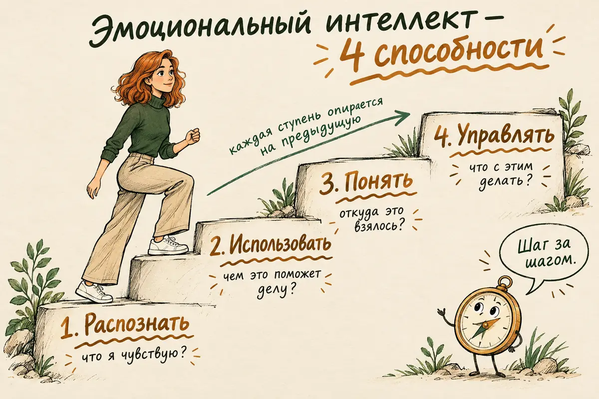
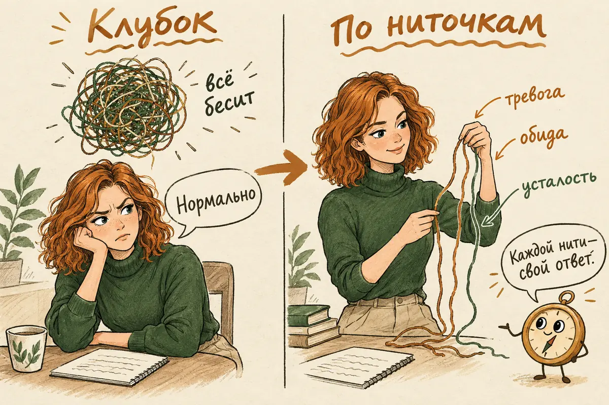
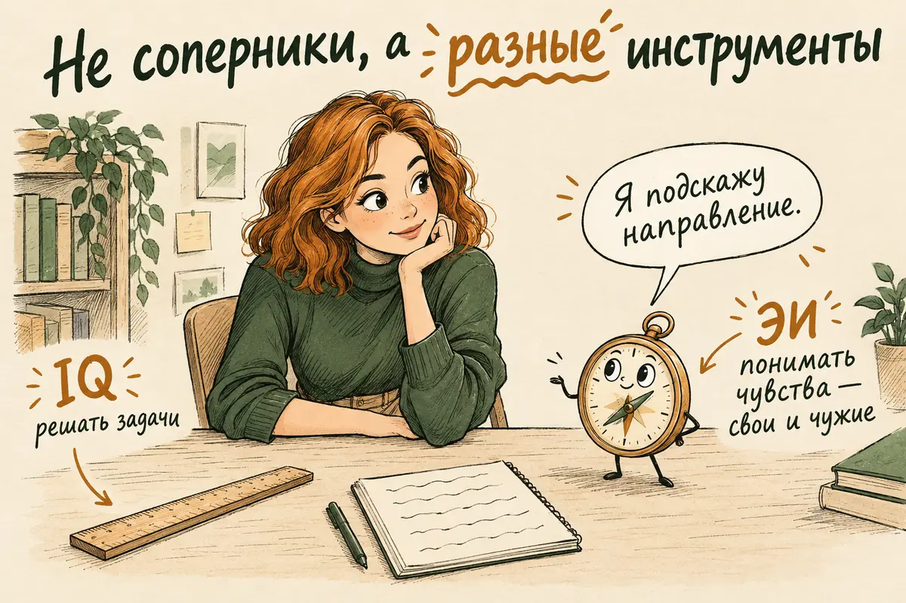
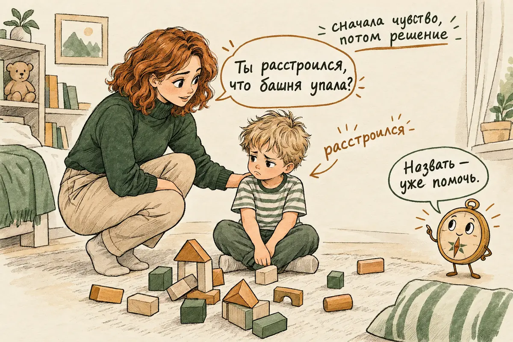
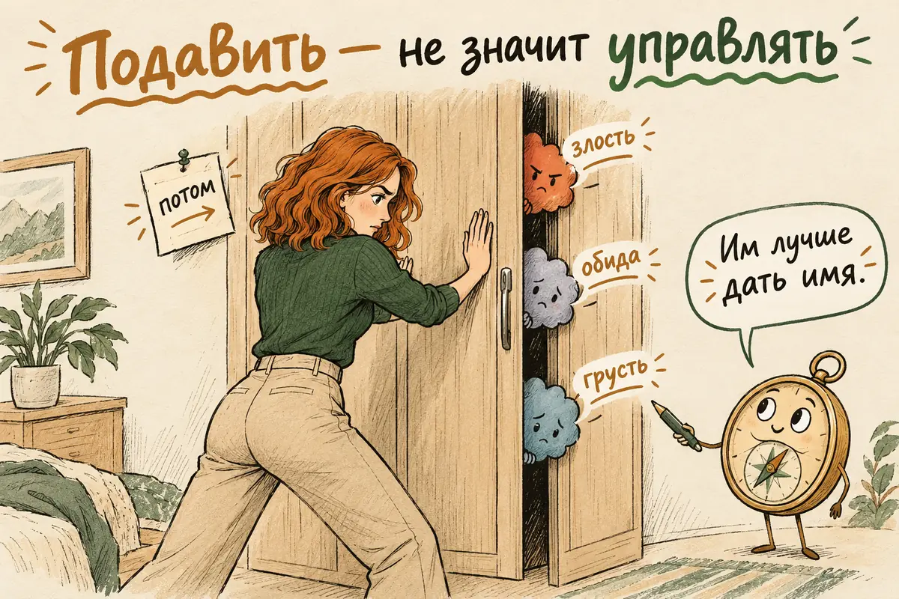

Главная → Блог → Эмоциональный интеллект
Эмоциональный интеллект: что это простыми словами, признаки и как его развить
Обновлено: 22.10.2026 · Источники проверены: 22.10.2026 · 17 минут чтения
Подготовлено по работам авторов понятия, мета-анализам и словарю Американской психологической ассоциации
Эмоциональный интеллект (ЭИ, EQ) — это умение замечать свои и чужие эмоции, понимать, откуда они берутся, и учитывать их, когда вы думаете, решаете и общаетесь. Он не про то, чтобы всегда быть спокойным и милым, и не про то, чтобы «не поддаваться чувствам». Он про точность: человек с развитым эмоциональным интеллектом лучше понимает, что с ним происходит, и поэтому реже действует вслепую. Это не врождённая черта, а набор навыков, и их можно тренировать в любом возрасте.
- Что такое эмоциональный интеллект простыми словами
- Из чего состоит эмоциональный интеллект: модели Майера–Сэловея и Гоулмана
- Признаки высокого и низкого эмоционального интеллекта
- Чем эмоциональный интеллект не является: 5 мифов
- Эмоциональный интеллект и IQ: что показывают исследования
- Как развить эмоциональный интеллект: 8 упражнений
- Эмоциональный интеллект в отношениях
- Эмоциональный интеллект на работе и у руководителя
- Эмоциональный интеллект ребёнка: что могут родители
- Когда дело не в навыке: алекситимия, депрессия, травма
- Как измеряют эмоциональный интеллект
- Частые ошибки в развитии эмоционального интеллекта
- Частые вопросы
Что такое эмоциональный интеллект простыми словами
Эмоциональный интеллект — это способность обращаться с эмоциями как с информацией: замечать их, понимать и использовать. Эмоции не мешают мышлению, а подсказывают, что для нас важно и как мы восприняли ситуацию. Страх часто связан с ощущением угрозы, злость — с чувством, что нарушены границы или справедливость, грусть — с потерей, вина — с ощущением, что мы поступили против своих правил. Но подсказка не всегда точна: страх бывает и там, где опасности нет, а вина — чрезмерной или навязанной. Эмоциональный интеллект — это умение заметить такую подсказку, проверить, насколько она соответствует ситуации, и решить, что с ней делать.
Словарь Американской психологической ассоциации описывает его как разновидность интеллекта, которая включает способность обрабатывать эмоциональную информацию и использовать её в мышлении и поведении. Слово «интеллект» здесь не случайно: авторы понятия настаивали, что речь о способности, похожей на обычный интеллект, — её можно измерить заданиями с правильными и неправильными ответами.
Сам термин впервые подробно описали Питер Сэловей и Джон Майер в статье 1990 года. Массовым он стал через пять лет, когда Дэниел Гоулман выпустил книгу «Эмоциональный интеллект» с подзаголовком о том, почему он может значить больше, чем IQ. Книга стала бестселлером, а вместе с ней пришла и путаница: в популярной версии под ЭИ стали понимать почти всё хорошее в человеке, от оптимизма до лидерских качеств.
Из чего состоит эмоциональный интеллект: модели Майера–Сэловея и Гоулмана
Чаще всего эмоциональный интеллект раскладывают либо на четыре способности по Майеру и Сэловею, либо на пять компонентов по Гоулману. Эти модели похожи по названиям, но описывают разные вещи, и от того, о какой идёт речь, зависит, что можно ожидать от «развития ЭИ».
Модель способностей Майера–Сэловея — научная основа понятия. В ней четыре ветви, и каждая опирается на предыдущую:
- Распознавать эмоции — свои и чужие: по ощущениям в теле, выражению лица, голосу, позе.
- Использовать эмоции для мышления — понимать, что одни задачи легче решать в спокойном настроении, другие — в приподнятом, и что эмоция помогает переключить внимание на важное.
- Понимать эмоции — знать, из чего они складываются, как одна переходит в другую (раздражение — в злость, злость — в вину) и что за ними стоит.
- Управлять эмоциями — своими и в отношениях с другими: не подавлять, а влиять на них так, чтобы это помогало целям и отношениям. Чужие чувства контролировать нельзя, но своим поведением можно влиять на то, как проходит разговор.
В обновлённом описании модели 2016 года авторы подчёркивают, что эмоциональный интеллект — это умение рассуждать об эмоциях, а не набор приятных черт характера.
Модель Гоулмана — популярная и «смешанная». В неё входят самосознание, саморегуляция, мотивация, эмпатия и социальные навыки. Это ближе к описанию зрелого, успешного в общении человека, чем к отдельной способности. Модель удобна для тренингов и разговоров о лидерстве, но к ней в науке больше вопросов: она сильно пересекается с обычными чертами личности — добросовестностью, экстраверсией, эмоциональной стабильностью.
Есть и третий взгляд — ЭИ как черта: то, как человек сам оценивает свои эмоциональные навыки. Его измеряют опросниками самоотчёта. В России известна модель психолога Дмитрия Люсина, который разделил эмоциональный интеллект на внутриличностный — понимание и управление своими эмоциями — и межличностный — понимание и управление эмоциями других.
| Способность (Майер–Сэловей) | Смешанная модель (Гоулман) | Черта (самоотчёт) | |
|---|---|---|---|
| Что это | Умение рассуждать об эмоциях и решать эмоциональные задачи | Широкий набор навыков и качеств зрелого человека | Как человек сам видит свои эмоциональные навыки |
| Из чего состоит | Распознавать, использовать, понимать, управлять | Самосознание, саморегуляция, мотивация, эмпатия, социальные навыки | Зависит от опросника, часто — понимание и управление своими и чужими эмоциями |
| Как измеряют | Задания с правильными ответами | Опросники, оценки коллег | Опросники «насколько это про вас» |
| Сильная сторона | Ближе всего к настоящему «интеллекту», меньше зависит от самооценки | Понятна, удобна для обучения и работы | Быстро и просто, связана с самочувствием |
| Слабая сторона | Сложно и дорого измерять | Сильно пересекается с чертами характера | Показывает уверенность в навыке, а не сам навык |
Для практики из этого следует простая вещь: когда говорят «развивать эмоциональный интеллект», полезнее всего тренировать первую модель — точность в распознавании и понимании эмоций и гибкость в обращении с ними. Это хорошая отправная точка, хотя сама по себе она не гарантирует, что придут и все остальные социальные навыки.

Признаки высокого и низкого эмоционального интеллекта
Развитый эмоциональный интеллект узнают не по сдержанности, а по точности и гибкости: человек понимает, что чувствует, и выбирает, что с этим делать. Трудности с ним — по тому, что эмоции живут своей жизнью: копятся, прорываются, удивляют и самого человека, и окружающих. Это не тест: отдельные признаки ничего не доказывают, а на то, как человек справляется с эмоциями, сильно влияют усталость, стресс, особенности нервной системы и конкретная ситуация. Таблица показывает направление, а не ставит оценку. Вот как это выглядит в обычных ситуациях:
| Эмоциональный интеллект пока не развит | Развитый эмоциональный интеллект | |
|---|---|---|
| Вопрос «как ты?» | «Нормально» или «плохо», больше слов не находится | «Устал и немного тревожусь из-за завтрашней встречи» |
| Сильная эмоция | Сразу действие: сорвался, хлопнул дверью, написал резкое сообщение | Есть пауза между чувством и поступком |
| Конфликт | Спор о фактах, а чувства остаются невидимыми | Замечает, что другой обижен или напуган, и говорит об этом |
| Чужая реакция | «Чего она так завелась? Я же просто сказал» | Догадывается, что задело, и проверяет догадку вопросом |
| Плохое настроение | Не понимает, откуда оно, и срывается на близких | Ищет причину и отделяет её от людей рядом |
| Тело | Не замечает напряжения в теле, пока оно не станет сильным | Замечает напряжение раньше и спрашивает себя, не связано ли оно с переживаниями |
Ещё несколько признаков развитого эмоционального интеллекта: человек может выдерживать неприятные чувства, не убегая от них в работу, еду или телефон; умеет говорить о своих эмоциях, не обвиняя других; признаёт ошибки без долгого самобичевания; умеет утешить, не бросаясь сразу давать советы; понимает, что у одного и того же события могут быть разные эмоциональные последствия для разных людей.
Ни один из этих признаков не ставит человеку «оценку». У каждого есть сферы, где эмоциональный интеллект работает хорошо, и сферы, где он отключается: можно тонко понимать коллег и не замечать собственной усталости, быть мудрым с друзьями и срываться на близких. И почти у всех он проседает при сильном стрессе, недосыпе и истощении.

Чем эмоциональный интеллект не является: 5 мифов
Вокруг эмоционального интеллекта много популярных представлений, которые подменяют его другими качествами. Вот самые частые:
- «Высокий ЭИ — это когда не злишься и не плачешь». Нет. Подавление эмоций — не управление ими. Человек с развитым ЭИ злится и грустит, как все, но понимает, что с ним, и выбирает, как это выразить. Подробно о том, чем подавление отличается от регуляции, — в статье о вспышках гнева.
- «ЭИ — это то же, что эмпатия». Эмпатия — только часть эмоционального интеллекта, способность понять чувства другого. Можно быть очень эмпатичным и при этом тонуть в чужих переживаниях, не отличая их от своих.
- «Человек с высоким ЭИ — всегда добрый». Не обязательно. Понимание эмоций — инструмент, и им можно пользоваться и чтобы поддержать, и чтобы манипулировать. В исследовании 2011 года знание о том, как управлять эмоциями, усиливало и просоциальное поведение у людей с сильными моральными ценностями, и вредящее другим поведение на работе у людей со склонностью к макиавеллизму. Тот, кто умело давит на ваши чувства, тоже может хорошо в них разбираться — об этом статья о газлайтинге.
- «Эмоциональный интеллект — это позитивность». Постоянно «думать позитивно» — способ не замечать неприятные эмоции, а не понимать их. Грусть, злость и страх — такая же нужная информация, как радость.
- «С ним надо родиться». Часть различий действительно связана с темпераментом и детским опытом, но навыки эмоционального интеллекта тренируются. Об этом — в разделе об упражнениях.
Эмоциональный интеллект и IQ: что показывают исследования
Утверждение «эмоциональный интеллект важнее IQ» в исследованиях не подтверждается, но и бесполезным ЭИ назвать нельзя. Он добавляет к обычному интеллекту и чертам характера немного, но устойчиво, и сильнее всего — там, где жизнь и работа связаны с людьми и чувствами.
Самые надёжные данные — из мета-анализов, которые объединяют десятки и сотни исследований:
- Учёба. Мета-анализ 2020 года по данным более 42 тысяч учащихся показал, что эмоциональный интеллект связан с успеваемостью: умеренно, но заметно. Сильнее всего — эмоциональный интеллект, измеренный заданиями, а не самоотчётом, и особенно ветви «понимание» и «управление» эмоциями. По важности он оказался третьим после обычного интеллекта и добросовестности. Авторы отдельно оговаривают, что направление связи не доказано.
- Работа. По мета-анализу 2010 года, эмоциональный интеллект как способность помогает в профессиях с высокой «эмоциональной нагрузкой» — там, где нужно постоянно работать с чувствами клиентов, пациентов, учеников. В профессиях, где этого мало, связь была даже слегка обратной. Те же авторы показали, что ветви ЭИ выстраиваются цепочкой: сначала распознать эмоцию, потом понять её, и только потом осознанно ею управлять.
Из этого следуют два практических вывода. Первый: эмоциональный интеллект — не волшебная причина успеха, и цифры вроде «80% успеха зависит от ЭИ» — это маркетинг, а не наука. Второй: в тех областях, где он важен, — близкие отношения, воспитание детей, работа с людьми, руководство — его развитие действительно может многое изменить. И ещё: высокий обычный интеллект от трудностей с эмоциями не страхует — это разные способности, хоть и связанные между собой.

Как развить эмоциональный интеллект: 8 упражнений
Эмоциональный интеллект развивается так же, как любой навык: через регулярную практику в обычной жизни, а не через чтение о нём. По мета-анализу 58 исследований, тренинги эмоционального интеллекта у взрослых дают умеренный положительный эффект — и для тестов способностей, и для самоотчётов. Вот упражнения, на которых строится большинство таких программ. Они опираются на исследования эмоциональных навыков, но не каждое из них проверялось в отдельном испытании, и действуют они у разных людей по-разному:
- Расширьте словарь эмоций. Вместо «нормально», «плохо» и «бесит» подбирайте точное слово: раздражение, обида, разочарование, тревога, зависть, стыд, облегчение, нежность. Люди, которые различают эмоции тоньше, по данным исследований, лучше с ними справляются и реже «гасят» их выпивкой или агрессией. Можно держать в телефоне список из 30–40 слов и сверяться с ним.
- Назовите чувство вслух или про себя. «Я злюсь», «мне страшно», «мне стыдно». Это помогает чуть отстраниться от автоматической реакции и яснее понять, что происходит. В лабораторном эксперименте 2007 года подбор слова к эмоции на фотографии уменьшал реакцию миндалевидного тела — участка мозга, связанного с реакцией на угрозу. В жизни эффект разный: иногда одного называния достаточно, а иногда нужны ещё пауза или поддержка.
- Делайте «чек-ин» три раза в день. Утром, днём и вечером на минуту остановитесь и ответьте на три вопроса: что я сейчас чувствую? где это в теле? чего мне хочется? Через пару недель вы начнёте замечать эмоции раньше, чем они вырастут.
- Ведите дневник эмоций. Короткая запись после заметной эмоции: ситуация — что почувствовал и насколько сильно — какая мысль пришла — что сделал — что из этого вышло. Через несколько недель видны повторяющиеся сценарии. Этот приём пришёл из когнитивно-поведенческой терапии.
- Спросите, о чём эмоция сообщает, — и проверьте это. Злость — что для меня нарушено? Тревога — чего я боюсь? Обида — чего я ждал и не получил? Вина — какое своё правило я нарушил? А затем: насколько это совпадает с тем, что происходит на самом деле? Как отличить полезную вину от ложной, разобрано в статье о чувстве вины.
- Сделайте паузу перед реакцией. Когда накрывает, отложите ответ: выдохните медленно, сосчитайте до десяти, выйдите из комнаты, не отправляйте сообщение сразу. Цель не подавить чувство, а дать себе время выбрать, что с ним делать.
- Угадывайте и проверяйте чувства других. Вместо того чтобы молча решать за человека, что он чувствует, спросите: «Мне кажется, ты расстроился из-за моих слов — так?» Если не угадали, это тоже полезно: вы узнаёте человека, а он видит, что вам не всё равно.
- Слушайте, не чиня. Когда человек делится переживанием, первые пару минут не давайте советов. Повторите своими словами, что услышали, и назовите чувство: «Похоже, ты очень устала, и тебе обидно, что этого никто не замечает». Часто именно это нужно больше всего.
Вот как может выглядеть одна запись в дневнике эмоций, если соединить несколько упражнений сразу — назвать чувство, поискать, что под ним, и проверить догадку:
| Пример записи | |
|---|---|
| Ситуация | Коллега при всех раскритиковал мой отчёт |
| Первое чувство | Злость, сильная — 8 из 10 |
| Что может быть под ним | Стыд, тревога за свою репутацию, ощущение несправедливости |
| Автоматическая мысль | «Он считает меня некомпетентным» |
| Что проверить | Что именно он раскритиковал? Это про весь отчёт или про два пункта? Он так говорит со всеми? |
| Что сделал | Не стал спорить сразу, через час написал: «Уточни, пожалуйста, какие моменты ты считаешь проблемными» |
| Что вышло | Замечаний оказалось два, оба по делу. Злость спала до 3 из 10, стыд остался, но стал меньше |
Это не универсальная схема для всех эмоций, а пример того, как навыки из списка работают вместе. Через несколько таких записей обычно видно, какие ситуации задевают вас сильнее всего и какие мысли повторяются.
Хорошо помогают практики осознанности: они учат замечать мысли и ощущения, не реагируя на них сразу. О них — на страницах о майндфулнесс и о терапии принятия и ответственности (ACT).
Эмоциональный интеллект в отношениях
В отношениях эмоциональный интеллект работает прежде всего как умение замечать, что партнёру плохо, и говорить о своих чувствах так, чтобы их можно было услышать. Мета-анализ 2017 года по 21 исследованию пар показал, что точность в понимании чувств партнёра связана с удовлетворённостью отношениями. Связь небольшая, но интересная деталь: важнее всего оказалось точно замечать именно негативные эмоции партнёра — обиду, тревогу, раздражение, — а не радость.
Как это выглядит на практике:
- Говорить о себе, а не о другом. «Мне обидно, когда я узнаю о планах последней» вместо «ты вечно всё решаешь без меня».
- Замечать, что ссора не о том, о чём спор. Спор о немытой посуде часто на самом деле об усталости и ощущении, что тебя не ценят.
- Останавливаться, когда эмоции зашкаливают. «Я сейчас слишком злюсь, давай вернёмся к разговору через час» — и действительно вернуться.
- Не путать понимание с согласием. Можно понимать, почему партнёр злится, и при этом не соглашаться с его требованиями. Как говорить «нет» без войны, разобрано в статье о личных границах.
У многих эмоциональный интеллект хорошо работает с друзьями и коллегами, но отключается в близких отношениях: там включаются старые страхи быть брошенным или поглощённым. Если вы узнаёте это в себе, загляните в статью о типах привязанности и в статью о ревности. А если понимание чужих чувств превратилось у вас в постоянное подстраивание под партнёра в ущерб себе, это уже не эмоциональный интеллект, а то, что описано в статье о созависимости.
Эмоциональный интеллект на работе и у руководителя
На работе эмоциональный интеллект нужнее всего там, где много общения и эмоционального напряжения: с клиентами, пациентами, учениками, в управлении командой. В профессиях, где люди большую часть дня работают с задачами, а не с людьми, его вклад заметно меньше. Поэтому отбор сотрудников «по EQ» для любой должности — скорее мода, чем наука.
Для руководителя эмоциональный интеллект — это прежде всего:
- замечать, что команда перегружена, раньше, чем начнутся увольнения;
- отделять собственное раздражение от рабочих решений;
- давать обратную связь так, чтобы её можно было услышать: о конкретном поступке, а не о человеке;
- выдерживать чужую злость или слёзы, не обесценивая и не впадая в панику;
- признавать свои ошибки без потери авторитета.
Обратная сторона: в профессиях, где приходится постоянно управлять чужими эмоциями и прятать свои, быстрее наступает истощение. Эмоциональный интеллект помогает это вовремя заметить. О признаках и выходе — в статьях об эмоциональном выгорании и о стрессе на работе.
Эмоциональный интеллект ребёнка: что могут родители
Эмоциональный интеллект ребёнка больше всего зависит от того, как взрослые реагируют на его чувства. Американский психолог Джон Готтман, автор книги, известной по-русски как «Эмоциональный интеллект ребёнка», описал подход, который он назвал эмоциональным наставничеством. По описанию Института Готтмана, в нём пять шагов:
- Заметить эмоцию ребёнка, в том числе неяркую, пока она не выросла в истерику.
- Увидеть в ней повод для близости и обучения, а не помеху, которую нужно поскорее прекратить.
- Выслушать с сочувствием и признать чувство: «Ты очень расстроился, что башня упала».
- Помочь назвать эмоцию словами: обида, злость, разочарование, страх.
- Вместе найти решение, удерживая границы: «Злиться можно, драться нельзя. Что можно сделать вместо этого?»
У подхода есть исследовательская поддержка. В испытании программы для родителей «Tuning in to Kids» 216 семей с детьми 4–5 лет случайно распределили на группы. После шести занятий родители чаще помогали детям называть и обсуждать эмоции, а у детей улучшилось понимание эмоций и, по словам родителей и воспитателей, стало меньше проблем с поведением.
Что обычно мешает: фразы «не плачь», «нечего бояться», «перестань злиться» учат ребёнка не понимать эмоции, а прятать их. Сами взрослые при этом не обязаны быть идеальными: важнее, что после срыва можно вернуться к ребёнку и сказать, что произошло. Если ребёнок или подросток долго подавлен, раздражителен или отказывается ходить в школу, полезно прочитать статьи о подростковой депрессии и о том, что делать, если ребёнок не хочет в школу.

Когда дело не в навыке: алекситимия, депрессия, травма
Иногда трудности с эмоциями — не недостаток тренировки, а признак состояния, с которым стоит разобраться отдельно. Ниже — очень разные явления со своими критериями, и перечисленные особенности не позволяют поставить себе диагноз: они лишь подсказывают, о чём стоит поговорить со специалистом. Вот самые частые случаи:
- Алекситимия — устойчивая трудность в распознавании и описании собственных чувств. Это не диагноз, а черта личности; по популяционным исследованиям, выраженная алекситимия встречается примерно у каждого десятого взрослого. Такие люди часто чувствуют эмоции как телесные ощущения: тяжесть, боль, ком в горле. В популяционном исследовании на 5 тысячах финнов алекситимия была связана с телесными жалобами независимо от болезней, депрессии и тревоги. Об этом — в статье о психосоматике.
- Депрессия притупляет эмоции, сужает их до серого фона и мешает понимать других. Если ничего не радует и сил нет уже несколько недель, дело не в эмоциональном интеллекте. Об этом — в статьях о депрессии и об апатии.
- Травма может выключать чувства как защиту или, наоборот, делать их слишком сильными. Ощущение онемения, «как за стеклом», резкие вспышки без понятной причины — повод прочитать статьи о ПТСР и о детских травмах.
- СДВГ часто сопровождается трудностями с регуляцией эмоций: они вспыхивают быстро и сильно. Регуляция и эмоциональный интеллект связаны, но это не одно и то же: такие трудности сами по себе не говорят о низком ЭИ — подробнее в статье о СДВГ у взрослых.
- Аутизм у взрослых иногда проявляется трудностями в чтении чужих эмоций по лицу и интонации, но у каждого по-своему. По тому, как человек считывает невербальные сигналы, нельзя судить об отсутствии у него чувств, эмпатии или эмоционального интеллекта.
- Очень сильные, быстро меняющиеся эмоции, страх быть брошенным, импульсивность — повод узнать о пограничном расстройстве личности.
Если вы узнали себя в одном из пунктов, лучше обсудить это с психологом или психотерапевтом. Упражнения из этой статьи всё равно будут полезны, но работать они будут лучше вместе с помощью по основной проблеме. Куда обратиться бесплатно — в справочнике помощи.
Как измеряют эмоциональный интеллект
Эмоциональный интеллект измеряют двумя принципиально разными способами: заданиями на способности и опросниками самоотчёта. Результаты у них совпадают слабо, потому что они измеряют разное.
- Тесты способностей. Самый известный — MSCEIT, созданный авторами модели. В нём нет вопросов «насколько вы согласны»: человек определяет эмоции на лицах, решает, какие чувства уместны в ситуации, как одна эмоция переходит в другую. Такие тесты платные и проводятся специалистами.
- Опросники самоотчёта. Человек сам оценивает, насколько хорошо он понимает свои и чужие эмоции. В России чаще всего используют опросник Холла и опросник ЭмИн Дмитрия Люсина. Они показывают, как вы видите свои навыки, — а это не всегда то же самое, что сами навыки: уверенные в себе люди часто ставят себе высокие оценки.
Качество методик, их русскоязычные адаптации и нормы сильно различаются, и даже хороший тест не заменяет разговора со специалистом, если трудности с эмоциями мешают жить.
Онлайн-тесты «узнай свой EQ за 5 минут» без указания методики стоит воспринимать как повод задуматься, а не как измерение. Если хочется узнать о себе больше, полезно посмотреть и на черты личности: эмоциональная стабильность и доброжелательность в модели Большой пятёрки частично пересекаются с эмоциональным интеллектом. Их можно оценить тестом Big Five, а склонность к вспышкам злости — тестом на гнев.
Частые ошибки в развитии эмоционального интеллекта
Чаще всего развитие эмоционального интеллекта буксует не от недостатка знаний, а от того, что его путают с самоконтролем или с анализом. Вот что мешает:
- Учиться «не чувствовать». Постоянно игнорировать или подавлять эмоции обычно не помогает с ними справиться: переживание продолжает влиять на поведение, усиливает напряжение или возвращается в похожих ситуациях. Цель — не меньше эмоций, а больше понимания.
- Анализировать вместо того, чтобы чувствовать. Бесконечно разбирать, почему вы расстроены, — не то же самое, что позволить себе расстроиться. Иногда достаточно назвать чувство и дать ему побыть.
- Использовать ЭИ как оружие. «У тебя низкий эмоциональный интеллект» — это обвинение, а не забота. Навык нужен, чтобы понимать других, а не ставить им оценки.
- Растворяться в чужих эмоциях. Понимать чувства другого не значит отвечать за них. Без этой границы эмпатия превращается в истощение.
- Ждать быстрого результата. Навык растёт постепенно и у всех с разной скоростью, а в стрессе старые привычки ещё долго будут возвращаться. Это нормально. Ориентир прогресса — не балл в тесте, а то, что вы чаще замечаете чувство до того, как оно вас накрыло.
- Только читать. Книги Гоулмана и других авторов дают хорошую карту, но навык появляется только в живых ситуациях: на работе, дома, в ссоре.

Хотите потренироваться прямо сейчас? Расскажите AI Therapist о ситуации, которая вас задела, — он поможет подобрать точные слова для чувств, понять, о чём они сообщают, и продумать, что ответить. Это удобный способ вести дневник эмоций и разбирать трудные разговоры, без регистрации и в любое время суток. Приложение помогает разобраться в переживаниях, но не ставит диагнозы и не заменяет психолога или врача.
Частые вопросы
Что такое эмоциональный интеллект простыми словами?
Это умение замечать свои и чужие эмоции, понимать, откуда они взялись, и учитывать их, когда вы думаете, решаете и общаетесь. Человек с развитым эмоциональным интеллектом не обязательно спокоен и мягок: он просто лучше понимает, что с ним и с другими происходит, и поэтому реже действует вслепую. Термин ввели психологи Питер Сэловей и Джон Майер в 1990 году, а популярным его сделал Дэниел Гоулман.
Можно ли развить эмоциональный интеллект во взрослом возрасте?
Да. Мета-анализ 58 исследований показал, что тренинги эмоционального интеллекта дают умеренный положительный эффект у взрослых. Лучше всего развиваются конкретные навыки: называть свои эмоции точными словами, делать паузу перед реакцией, проверять догадки о чувствах других. Нужна регулярная практика в обычной жизни, а не только чтение книг.
Что важнее: IQ или эмоциональный интеллект?
Исследования не подтверждают популярную фразу, что эмоциональный интеллект важнее IQ. В мета-анализе об учёбе эмоциональный интеллект оказался третьим по силе предсказателем успеваемости — после обычного интеллекта и добросовестности. Он добавляет к IQ и чертам характера немного, но заметно, особенно там, где работа и жизнь связаны с людьми и чувствами.
Какие признаки низкого эмоционального интеллекта?
Человеку трудно назвать, что он чувствует, кроме «нормально» и «плохо»; эмоции копятся и прорываются вспышками или телесными симптомами; он часто не замечает, что задел другого, и удивляется реакциям людей. Но такие трудности бывают и при депрессии, сильном стрессе, травме, СДВГ или аутизме, поэтому это не ярлык, а повод присмотреться к себе.
Как проверить уровень эмоционального интеллекта?
Есть два типа методик. Тесты способностей вроде MSCEIT дают задания с правильными ответами — например, определить эмоцию по лицу; их проводят специалисты, и они платные. Опросники самоотчёта, например Холла или ЭмИн Люсина, показывают, как вы сами оцениваете свои навыки. Онлайн-тесты без указания методики стоит воспринимать как повод задуматься, а не как измерение.
Чем эмоциональный интеллект отличается от эмпатии?
Эмпатия — способность почувствовать и понять, что переживает другой человек. Эмоциональный интеллект шире: он включает и эмпатию, и понимание собственных эмоций, и умение ими управлять. Можно быть очень эмпатичным, но тонуть в чужих чувствах, и можно хорошо понимать других, но плохо справляться с собой.
Как развивать эмоциональный интеллект у ребёнка?
Главное — то, как взрослые реагируют на эмоции ребёнка. Психолог Джон Готтман назвал этот подход «эмоциональным наставничеством»: заметить чувство ребёнка, увидеть в нём повод для близости, выслушать и признать его, помочь назвать эмоцию словами и вместе найти, что делать, удерживая границы поведения. Программы для родителей, построенные на этом подходе, в исследованиях улучшали понимание эмоций у детей и уменьшали проблемы с поведением.
Как подготовлен материал. Текст подготовлен редакцией AI Therapist. Мы опираемся на работы авторов понятия эмоционального интеллекта, словарь Американской психологической ассоциации, мета-анализы и рандомизированные испытания; цифры приводим по первоисточникам и ставим ссылки рядом с ними. Мы разделяем научную модель эмоционального интеллекта и популярные представления о нём и прямо указываем, где данные ограничены. Материал носит просветительский характер и не заменяет консультацию психолога или врача.
Источники: APA Dictionary of Psychology — Emotional intelligence, Salovey P., Mayer J. D. «Emotional Intelligence», Imagination, Cognition and Personality, 1990, Mayer J. D., Caruso D. R., Salovey P. «The Ability Model of Emotional Intelligence: Principles and Updates», Emotion Review, 2016, MacCann C. et al. «Emotional intelligence predicts academic performance: A meta-analysis», Psychological Bulletin, 2020, Joseph D. L., Newman D. A. «Emotional intelligence: an integrative meta-analysis and cascading model», Journal of Applied Psychology, 2010, Mattingly V., Kraiger K. «Can emotional intelligence be trained? A meta-analytical investigation», Human Resource Management Review, 2019, Côté S. et al. «The Jekyll and Hyde of emotional intelligence», Psychological Science, 2011, Lieberman M. D. et al. «Putting feelings into words», Psychological Science, 2007, Kashdan T. B., Barrett L. F., McKnight P. E. «Unpacking Emotion Differentiation», Current Directions in Psychological Science, 2015, Sened H. et al. «Empathic accuracy and relationship satisfaction: A meta-analytic review», Journal of Family Psychology, 2017, Havighurst S. S. et al. «Tuning in to Kids: improving emotion socialization practices in parents of preschool children», Journal of Child Psychology and Psychiatry, 2010, The Gottman Institute — An Introduction to Emotion Coaching, Mattila A. K. et al. «Alexithymia and somatization in general population», Psychosomatic Medicine, 2008.
Кто отвечает за содержание сайта и по каким правилам мы готовим материалы — на странице о проекте.
Читать также
- Вспышки гнева — что делать, когда злость прорывается раньше, чем успеваешь подумать.
- Чувство вины — как отличить полезную вину от ложной.
- Личные границы — как понимать других и не растворяться в них.
- Типы привязанности — почему в близких отношениях эмоции ведут себя иначе.
- Психосоматика — что происходит, когда чувства не находят слов.
- Эмоциональное выгорание — когда работа с чужими эмоциями истощает.
- Тест Big Five — черты личности, которые пересекаются с эмоциональным интеллектом.